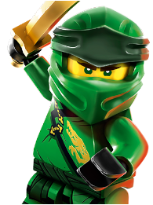
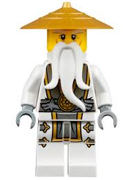

| Lego Ninjago |
|  |
Lloyd |
El es el hijo de Lord Garmadon, por eso quería seguir los pasos de su padre. Sin embargo todo su futuro cambia cuando se descubre que él es el Ninja Verde.
Después el empieza a entrenar para derrotar a su padre ya que la profecía dice que el Ninja Verde vencerá al Señor Oscuro (Lord Garmadon) |
 |
Garmadon |
Antes del comienzo de la serie, un joven Garmadon fue mordido por el Gran Devorador e infectado con el mal.
La corrupción lo transformó en Garmadon Señor , un villano hambriento de poder que se desempeñó como el principal antagonista de las dos primeras temporadas de la serie. |
|  |
SenseiWu |
Sensei Wu es el hijo menor del Primer Maestro del Spinjitzu. En la infancia de Wu, él y Garmadon eran los mejores amigos.
El es la panificacion de la paciencia tal y como se muestra al entrenar a los jóvenes ninjas
Tras restablecer el equilibrio por el momento su siguiente desafio es ayudar a los ninjas a descubrir su potencial. |
| Un grupo de guerreros ninja defiende su ciudad, Ninjago, de un malvado señor de la guerra llamado Garmadon, quien además es el padre de uno de los guerreros que se oponen a él.
|